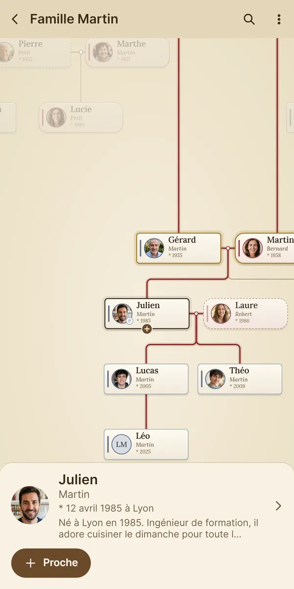
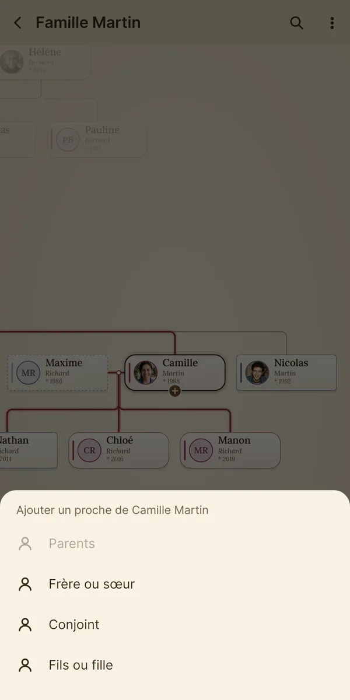
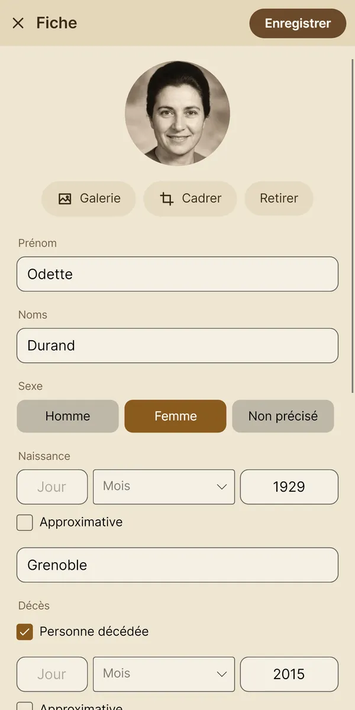
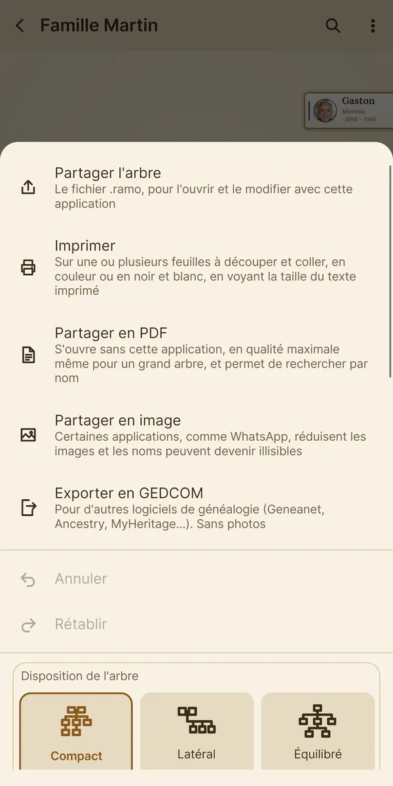
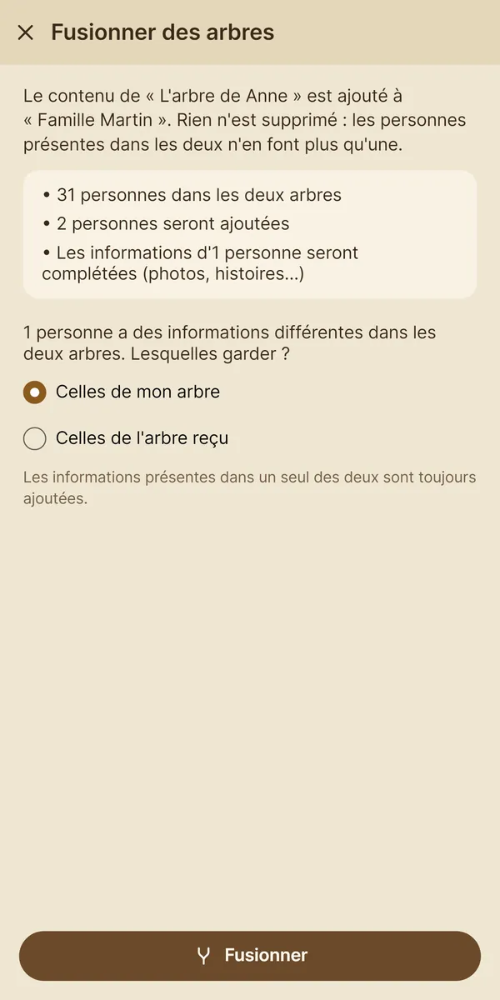
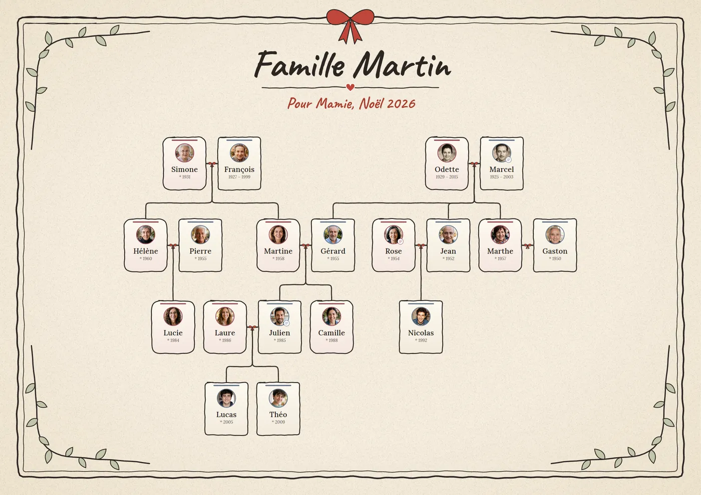
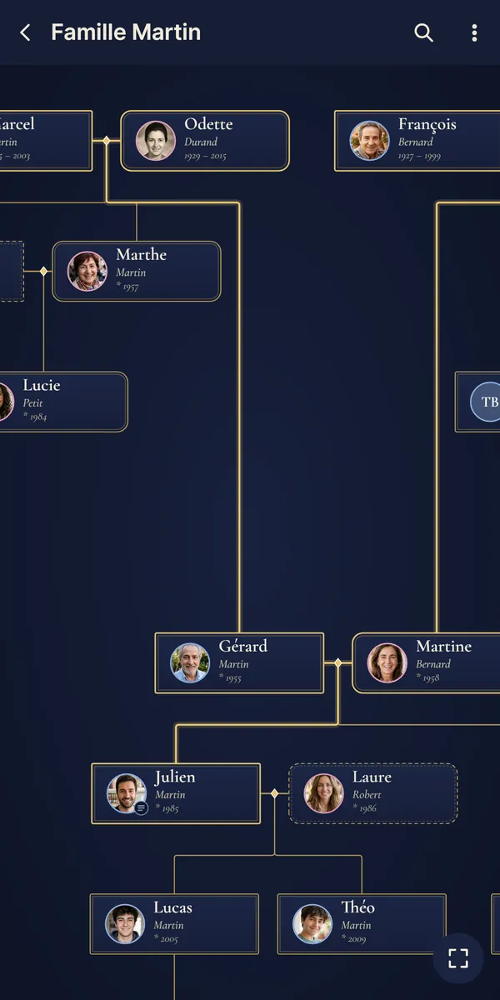
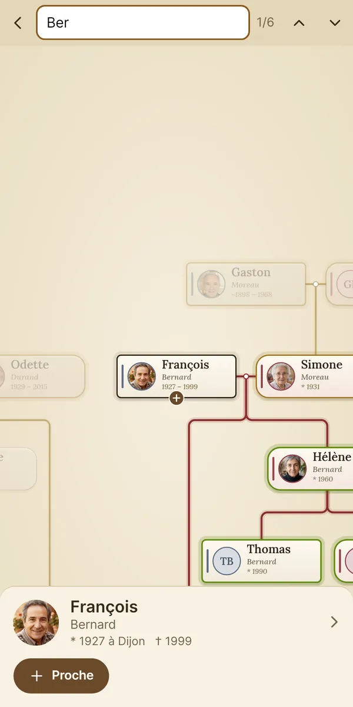
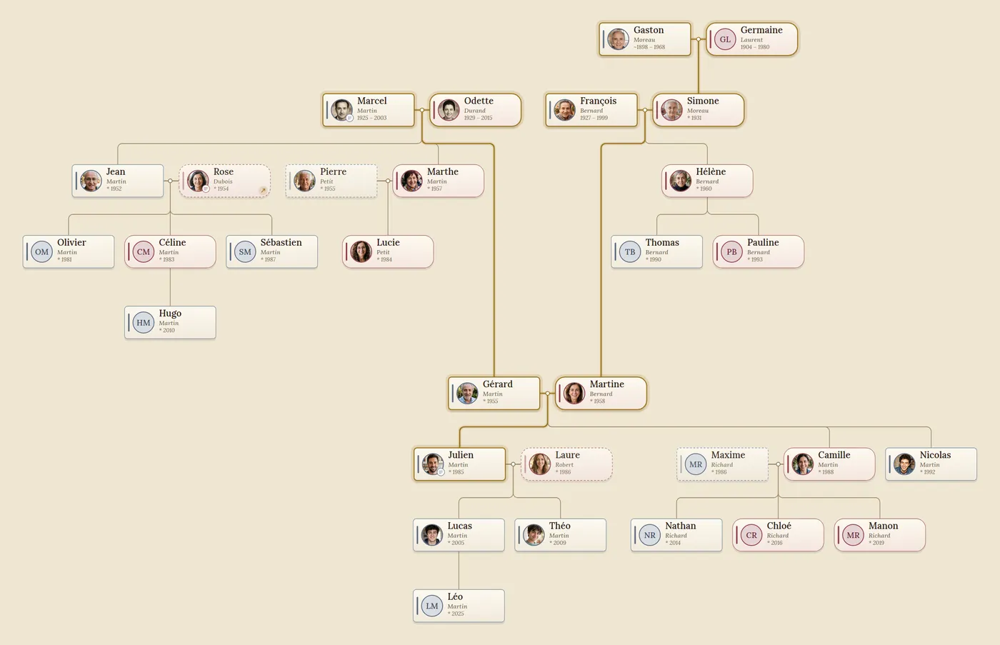

Arbre généalogique facile
L'arbre de votre famille, facile à faire et à offrir
Créez votre arbre généalogique sur votre téléphone, partagez-le en PDF avec toute la famille et imprimez-le en grand pour l'afficher chez vous ou l'offrir.
Gratuit pour commencer · Sans compte ni publicité · Sans abonnement


Facile dès la première minute
Commencez par vous. Touchez une fiche et ajoutez ses parents, son conjoint, ses enfants ou ses frères et sœurs : Ramo dispose l'arbre tout seul, même quand la famille s'agrandit. Inutile de connaître la généalogie ou de lire un mode d'emploi.
- Des photos de la galerie ou de l'appareil photo, avec des dates approximatives si vous ne les connaissez pas exactement.
- L'histoire de chaque personne : où elle est née, son métier, ses anecdotes.
- Retrouvez n'importe qui par son nom et touchez quelqu'un pour voir s'illuminer ses ancêtres et ses descendants.


Partagez-le avec toute la famille
Envoyez l'arbre en PDF par message ou par e-mail : il arrive entier et net, et l'on peut zoomer pour lire chaque nom. Ou en image, ou sur papier.
Ou envoyez l'arbre lui-même : vos proches l'ouvrent avec Ramo, qui est gratuit, et peuvent le consulter et le compléter. Si chacun ajoute sa branche et vous le renvoie, les arbres fusionnent tout seuls, sans doublons.


Imprimez-le ou offrez-le
Ramo répartit l'arbre sur une ou plusieurs feuilles (A4, A3, Lettre US…) à découper et assembler, en couleur ou en noir et blanc, et vous montre d'abord le résultat et la taille des noms.
Ou faites-en une affiche à offrir, avec titre, dédicace et cadre, aux formats de cadre les plus courants : 30×40, 40×50 et 50×70 cm. Un cadeau pour les grands-parents, pour Noël ou pour une réunion de famille.

Un arbre clair et beau, à votre goût
- Dix styles, comme Album, Jardin, Papier et encre ou Parchemin, chacun avec ses couleurs et sa police.
- Six dispositions de l'arbre, aussi de gauche à droite pour les familles très larges.
- Le lien de parenté de chacun avec la personne principale : cousin issu de germain, grand-oncle, petite-nièce, belle-mère…
- La date et le lieu du mariage de chaque couple, et un rappel le matin pour les anniversaires de la famille.
- Import et export GEDCOM, le format des autres logiciels de généalogie.


Sans compte : tout sur votre téléphone
Pas d'inscription ni de publicité. Vos arbres restent uniquement sur votre téléphone et fonctionnent hors connexion : ils ne sont envoyés à aucun serveur et personne d'autre ne voit vos données. La sauvegarde garde tout dans un seul fichier.
Aussi sur ordinateur
Ramo existe pour Android sur Google Play et pour Windows sur le Microsoft Store. Les arbres sont des fichiers .ramo qui s'ouvrent de la même façon sur les deux : passez-les de l'un à l'autre et reprenez là où vous en étiez, sur grand écran.

Gratuit pour commencer, un seul paiement pour tout avoir
Gratuit
- Créez votre arbre, jusqu'à 50 personnes.
- Ouvrez et modifiez tous les arbres qu'on vous envoie.
- Partagez-le en PDF ou en image et imprimez-le sur des feuilles, avec une petite mention « Fait avec Ramo ».
- Sans publicité.
Ramo complet
- Un seul paiement, sans abonnement.
- Arbres et personnes sans limite.
- Affiches à offrir.
- Arbres liés (la belle-famille dans son propre arbre).
- PDF, images et impressions sans la mention.
Ramo complet s'achète dans l'application, sur Google Play ou sur le Microsoft Store.